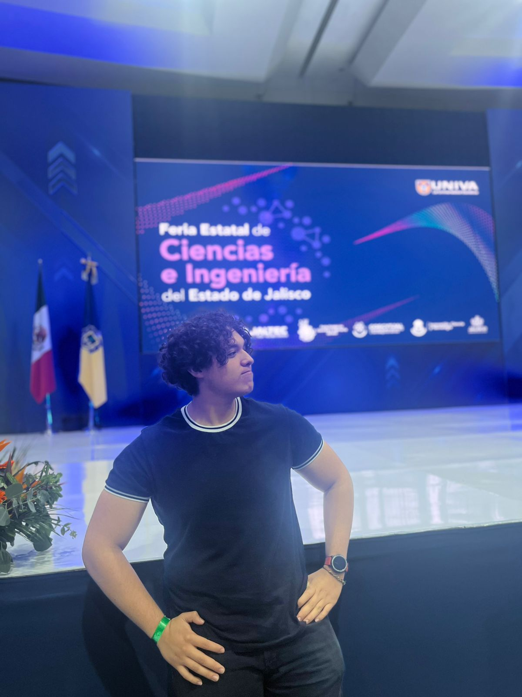

Sobre mí
Actualmente he participado en varios concursos tales como el Reto Steam Jalisco 2025 o la Feria Estatal de Ciencia e Ingenierías del estado Jalisco.
Presentando distintos proyectos a jueces y llevándonos un top 18 a nivel estatal en el Reto Steam Jalisco.

Experiencia Profesional y Proyectos
| Período | Empresa / Evento | Cargo | Logros Principales |
|---|---|---|---|
| 2024 - 2025 | Reto Steam Jalisco | Participante / Desarrollador | Top 16 a nivel estatal presentando proyectos tecnológicos innovadores. |
| 2024 | Feria Estatal de Ciencia | Expositor | Presentación exitosa de proyecto de ingeniería ante jurado calificador. |
| 2023 - Actualidad | Proyectos Personales | Programador Junior | Desarrollo de páginas web y entrenamiento de modelos de I.A. básicos. |